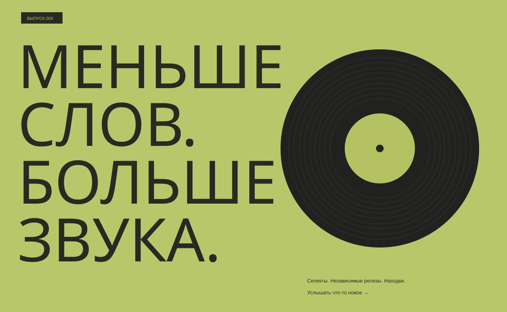

RITM / 001НОЧНОЙ
МАРШРУТ
МАРШРУТ
Ночной маршрут
03:24DUB / ELECTRONIC

DUB / ELECTRONIC
AMBIENT / LIVE
LEFTFIELD / HOUSE
Генеративный синтезатор / демозвук
Вымышленный музыкальный архив. Звук в плеере синтезируется прямо в браузере после нажатия кнопки.